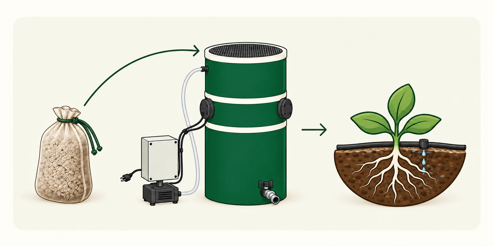

Prepare the run
Set up the reactor and starter inputs with a production schedule linked to the intended application.
The system
See how the cartridge and reactor work together, what operating the system involves, and how growers could produce or purchase locally.
How it works
The system is designed to grow microorganisms from a starter cartridge in a reusable reactor, then deliver the liquid through suitable farm equipment.

Illustrated system overview.
The mesh cartridge holds the starter bacteria and growth media—the material that supports their growth. Each cycle also includes a separate feed pack, added partway through the run.
The reactor is designed to help the bacteria grow on the material inside the cartridge, multiply, and move through the mesh into the surrounding liquid. The feed pack supplies carbon, a food source that supports their continued growth.
The liquid carries the microorganisms to the application site through a suitable irrigation system. It could also be transferred into mixing tanks for smaller or mobile setups. Pilot planning will establish equipment fit and application requirements.
Picture the working routine
The operator prepares the run, checks progress, adds the feed pack partway through, and handles application and cleaning. Here is the current planning baseline.
Planning estimates to be checked during pilots. Setup and cleaning are additional to daily checks; cleaning time is still being established.
Set up the reactor and starter inputs with a production schedule linked to the intended application.
Check the run and add the included feed pack partway through. The equipment still needs regular operator attention.
Plan handling and delivery through suitable equipment, then clean and prepare the system for another cycle.
Before a trial, we’ll walk through setup, the checks to make during a run, and when to add the feed pack. We’ll agree on who looks after the system and how to reach us for help. Cleaning between cycles is part of the routine; we’re still establishing how long that takes.
The design goal is flexibility across farm setups. Depending on the site, the liquid could be fed into a larger irrigation system using a suitable pump and hose, or transferred into mixing tanks for smaller, modular, or mobile systems. We’re also exploring compatible spraying methods. We would review filtration, delivery, handling, and application requirements with you before a trial; compatibility is still being evaluated.
A nearby retailer, co-op, or local producer could operate the reactor. You would purchase the output without managing production equipment yourself. You can register purchasing interest now to help us identify regional demand; local availability is still being developed.
Equipment and space
The footprint is a planning estimate for a side-by-side equipment layout; working clearance is additional. We’ll review the arrangement with you before setup.
Explore production timing, irrigation integration, quality, and participation in our frequently asked questions.